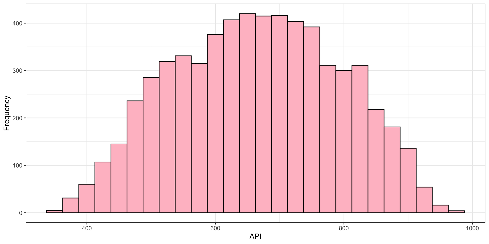
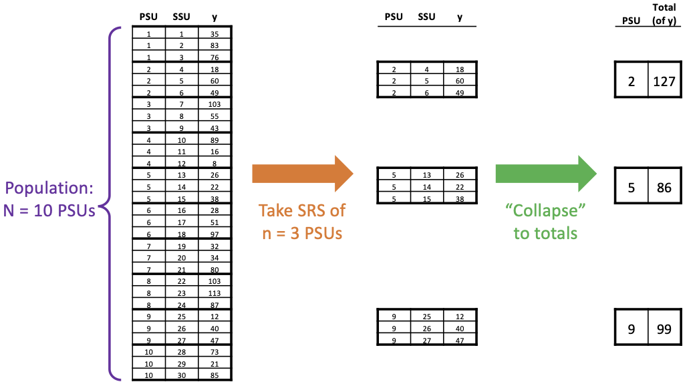
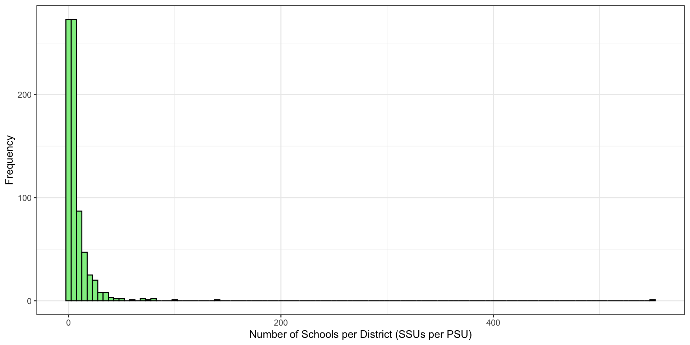
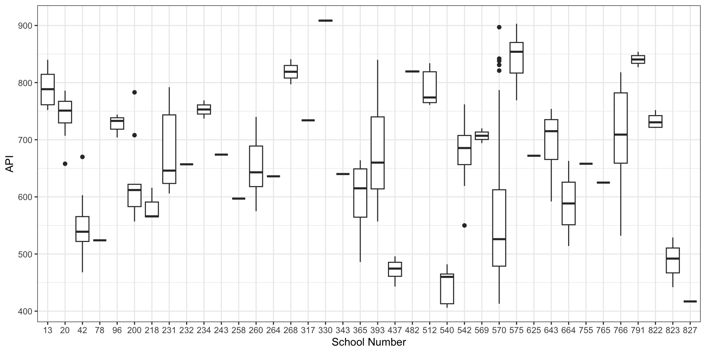
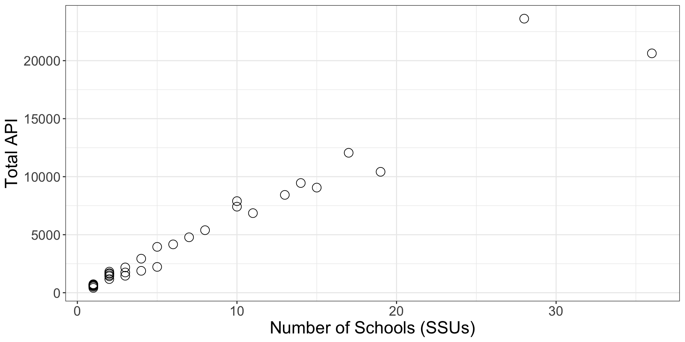
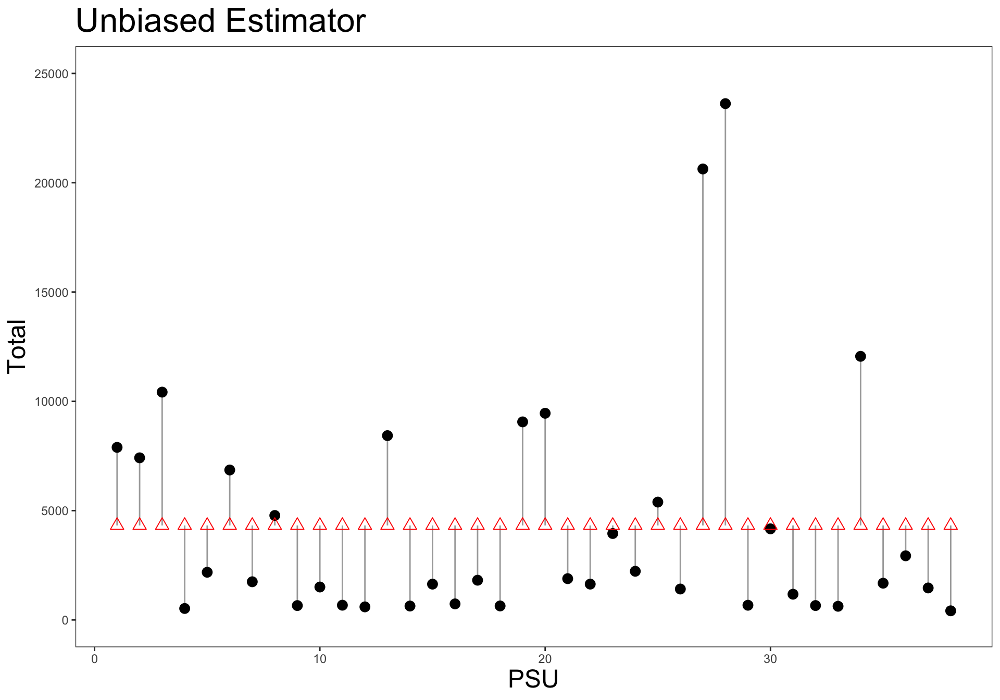
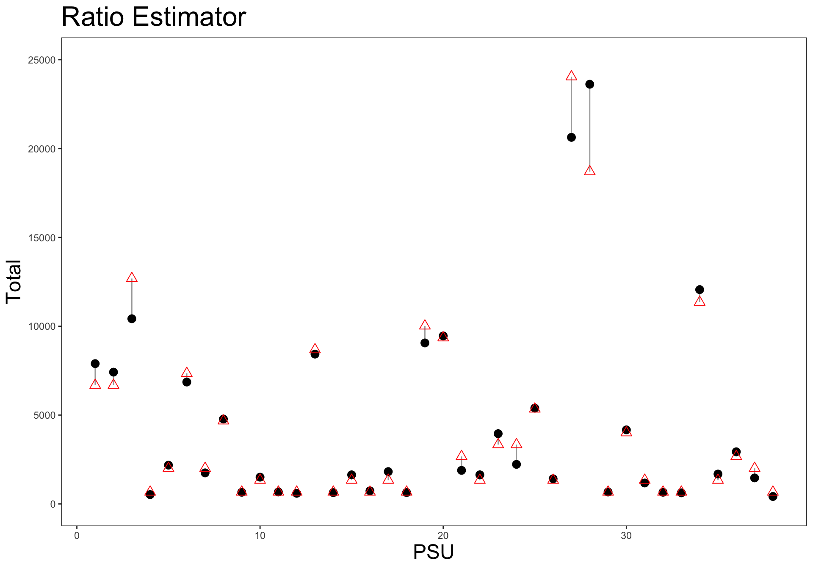

Cluster Sampling:
One-stage with Unequal Size Clusters
PUBHBIO 7225 Lecture 12
Generative AI acknowledgment: MS Copilot was used to generate alt text for some images
Outline
Topics
- One-stage Cluster Sampling with Unequal Cluster Sizes
- Ratio Estimator
Activities
- 12.1 Clusters of Unequal Sizes
Assignments
- Peer Evaluation of Problem Set 3 due Tuesday 10/7/25 11:59pm via Carmen
- Quiz 3 due Thursday 10/9/2025 11:59pm via Carmen
- Group Progress Report due Thursday 10/9/2025 11:59pm via Carmen (only one group member needs to upload this)
Review of One-Stage Cluster Sampling
\(N\) = number of PSUs (clusters) in the population
\(n\) = number of PSUs (clusters) in the sample
\(M_i\) = number of SSUs (e.g., people) in the \(i\)th PSU in the population
\(m_i\) = number of SSUs (e.g., people) in the \(i\)th PSU in the sample
\(M_0\) = total number of SSUs (e.g., people) in the population
For one-stage cluster sampling:
Take an SRS of \(n\) PSUs from a population of \(N\) PSUs
Measure \(y_{ij}\) for all \(M_i\) SSUs within the \(i\)th sampled PSU
Review of One-Stage Cluster Sampling (con’t)
To estimate the mean of \(y\) we…
Calculate the average cluster total across the sampled PSUs: \(\displaystyle \bar{t}= \frac{1}{n} \sum_{i\in \mathcal{S}} t_i\)
Multiply average by number of PSUs to get a grand total: \(\displaystyle \hat{t}_{clus}= N \bar{t}= \frac{N}{n} \sum_{i\in \mathcal{S}} t_i\)
Divide by the total number of SSUs to get an overall mean: \(\displaystyle \hat{\bar{y}}_{clus}= \frac{\hat{t}_{clus}}{M_0} = \frac{N\bar{t}}{M_0}\)
Estimate variance with: \(\displaystyle \widehat{V}(\hat{\bar{y}}_{clus}) = \frac{N^2}{M_0^2} \left(1-\frac{n}{N}\right)\frac{s_t^2}{n}\) where \(s_t^2=\widehat{V}(t_i)\)
In a Picture

- \(\bar{t}=\)
- \(\hat{t}_{clus}\)=
- \(\hat{\bar{y}}_{clus} =\)
The Problem: Clusters (PSUs) Are Not Usually Equal Sizes
Reality: often PSUs are unequal sizes (all the examples from last lecture had \(M_i\) the same in all PSUs)
Really easy to imagine clusters that are unequal in size:
Students within classrooms
Households within Census tracts
Patients within hospitals
Schools within school districts
Etc.
- Good news: the same estimation method can be used when cluster sizes are unequal
- Bad news: when PSUs are unequal in size, often the PSU totals \((t_i)\) are highly variable, leading to large \(s_t^2\) and thus large \(\widehat{V}(\hat{\bar{y}}_{clus})\)
In a Picture
Example from last class: sampling rooms, measuring GPA of all students in a room
We had all rooms the same size:
![A comparative data visualization consisting of two tables. The left table presents individual student data with three columns: id, room, and gpa. It includes 20 entries grouped by room numbers, showing student IDs and their corresponding GPAs. The right table aggregates this data, displaying the total GPA per room (all rooms have 4 students) with two columns: room and total of GPA. Red arrows visually link each student's GPA in the left table to the corresponding room's total GPA in the right table, illustrating the summation process to show an SRS of totals.](./figures/onestage_cluster_totals.png)
What if rooms were different sizes:
![A comparative data visualization consisting of two tables. The left table presents individual student data with three columns: id, room, and gpa. It includes 20 entries grouped by room numbers, showing student IDs and their corresponding GPAs. The right table aggregates this data, displaying the total GPA per room (with rooms of different sizes) with two columns: room and total of GPA. Red arrows visually link each student's GPA in the left table to the corresponding room's total GPA in the right table, illustrating the summation process to show an SRS of totals.](./figures/onestage_cluster_totals_unequal.png)
- What happens to the variability of the totals (when rooms are different sizes)?
Example: Sampling School Districts
Population: \(M_0=\) 6194 schools in \(N=\) 757 school districts
PSU = school district
SSU = school
\(y\) = Academic Performance Index (based on standardized test results)
True population mean API: \(\bar{y}_U =\) 664.7
- Number of SSUs per PSU (schools per district) ranges wildly:
Min. 1st Qu. Median Mean 3rd Qu. Max.
1 2 4 8 9 552 
Example (con’t)
One-stage cluster sample taken of \(n=\) 38 PSUs (districts) – roughly 5% of total
Result is a total of 246 SSUs
Boxplot of API \((y)\) by PSU (for the sample):

Number of SSUs per PSU in the sample has pretty big range:
Min. 1st Qu. Median Mean 3rd Qu. Max.
1 1 3 6 10 36 - Notice that the one really big PSU didn’t happen to get sampled
Example: Estimating the Mean API
des <- svydesign(id = ~dnum, weight = ~wt, fpc = ~popsize, data=samp)
svytotal(~api00, design = des) total SE
api00 3272511 642857
Estimate of total:
- \(\hat{t}_{clus} = \text{3272511}\)
Estimate of mean:
- \(\hat{\bar{y}}_{clus}= \hat{t}_{clus}/M_0 = \text{3272511}/\text{6194} = \text{528.3}\) (\(M_0=\) 6194 districts in pop.)
Estimate of variance of the mean:
- \(\widehat{V}(\hat{\bar{y}}_{clus}) = \frac{1}{M_0^2}\widehat{V}(\hat{t}_{clus}) = \frac{1}{\text{6194}^2} (\text{642857}^2) = \text{10771.7}\)
Estimated SE of the mean: \(\widehat{SE}(\hat{\bar{y}}_{clus}) = \sqrt{\text{10771.7}} = \text{103.8}\)
- That is a pretty big standard error! 95% CI = 528.3 \(\pm\) 103.8 = (320.8, 735.9)
Activity 12.1 (Part 1)
Clusters of Unequal Sizes (Part 1)
Our Mean Estimate: The Unbiased Estimator
Our mean estimator is: \(\displaystyle \hat{\bar{y}}_{clus}= \frac{N \bar{t}}{M_0} = \frac{\hat{t}_{clus}}{M_0}\)
Note the denominator: known total number of SSUs
This is called the unbiased estimator of the mean, since it is unbiased for the true population mean (\(\bar{y}_U\))
We have taken an SRS of PSU totals \((t_i)\)
Thus by property of SRS, the estimated total is unbiased: \(E[\hat{t}_{clus}] = t_U\)
Thus \(E[\hat{\bar{y}}_{clus}] = E[\hat{t}_{clus}/M_0]=E[\hat{t}_{clus}]/M_0 = t_U/M_0 = \bar{y}_U\)
The unbiased estimator can be written in terms of sampling weights: \(\displaystyle \hat{\bar{y}}_{clus}= \frac{\sum_{i\in \mathcal{S}} \sum_{j\in \mathcal{S}_i} w_{ij} y_{ij}}{M_0}\)
- Remember that when an SRS of PSUs is taken, \(w_{ij} = N/n\) for all sampled units
But, what if we don’t know \(M_0\)?
- For example, if we only have a list of housing units, not people in the units
We can definitely still estimate the total – but can we still estimate the mean?
Another Way: Ratio Estimation
Ratio estimator of the mean: \[\hat{\bar{y}}_r= \frac{\hat{t}_{clus}}{\widehat{M}_0} = \frac{N \bar{t}}{N \hat{\bar{M}}} = \frac{N \frac{1}{n} \sum_{i\in \mathcal{S}} t_i}{N\frac{1}{n} \sum_{i\in \mathcal{S}} M_i} = \frac{\sum_{i\in \mathcal{S}} t_i}{\sum_{i\in \mathcal{S}} M_i} = \frac{\sum_{i\in \mathcal{S}} M_i \bar{y}_i}{\sum_{i\in \mathcal{S}} M_i}\] where \(\hat{\bar{M}}= \frac{1}{n} \sum_{i \in \mathcal{S}} M_i =\) average number of SSUs per PSU (based on sample)
- Note the denominator: estimated total number of SSUs
The ratio estimator can also be written in terms of sampling weights: \(\displaystyle \hat{\bar{y}}_r= \frac{\hat{t}_{clus}}{\widehat{M}_0} = \frac{\sum_{i\in \mathcal{S}} \sum_{j\in \mathcal{S}_i} w_{ij} y_{ij}}{\sum_{i\in \mathcal{S}} \sum_{j\in \mathcal{S}_i} w_{ij} }\)
This estimator can be used even if you don’t know the true total number of SSUs, \(M_0\)
It is, however, not unbiased (\(E[\hat{\bar{y}}_r] \ne \bar{y}_U\)) and is a ratio of two random variables
- Both the numerator, \(\hat{t}_{clus}\), and denominator, \(\widehat{M}_0\), will be different in another sample
Another Way (con’t)
The bias will be small, however, if the correlation between \(M_i\) and \(t_i\) is close to 1
(If cluster sizes and cluster totals are highly correlated)And, this is usually the case!
The total for each PSU is usually roughly proportional to the size of the PSU

\(\text{Corr}(t_i,M_i) = \text{0.977}\)
Also think about the dorm room example – the more students in a room, the larger the total GPA will be
Example: Estimating the Mean API with Ratio Estimator
Hand-calculating the ratio estimator:
From before, \(\hat{t}_{clus} = \text{3272511}\)
Weights for each sampled unit = \(\frac{N}{n} = \frac{\text{757}}{\text{38}} = \text{19.92}\)
Sample has 246 schools (SSUs), so sum of weights = \(\widehat{M}_0 = \text{246} \times \text{19.92} = \text{4900.58}\)
- Ratio estimate of mean API: \(\displaystyle \hat{\bar{y}}_r= \frac{\hat{t}_{clus}}{\widehat{M}_0} = \frac{\text{3272511}}{\text{4900.58}} = \text{667.8}\)
- Compare to the unbiased estimator, \(\displaystyle \hat{\bar{y}}_{clus} = \frac{\hat{t}_{clus}}{M_0} = \frac{\text{3272511}}{\text{6194}} = \text{528.3}\)
For this sample, the ratio estimate of the mean is larger than the unbiased estimate for this sample – why?
- Note: this is just true for this sample – ratio estimator could be bigger, could be smaller, depends on the specific sample
Variance Estimation for the Ratio Estimator
- Why would we want to use a biased estimator, even if the bias is small?
- Because of potentially HUGE gains in efficiency – much smaller variance estimate
But, it is also a ratio of two random variables \((\hat{t}_{clus},\widehat{M}_0)\), thus tricky to deal with
To calculate its variance we use Taylor series linearization1
What is Linearization?
We want the variance of a nonlinear function of two random variables: \(V(\hat{t}_{clus}/\widehat{M}_0)\)
We cannot “pull apart” this nonlinear function with rules that work for sums of random variables, like \(V(X+Y) = V(X) + V(Y) + 2\text{Cov}(X,Y)\)
But, if we could approximate the nonlinear function with a linear function then we could use the rules about sums of random variables
Linearization reduces the nonlinear quantity (the ratio, here) to an approximate linear quantity (an expression involving adding and subtracting random variables – not multiplying or dividing them) by using the linear terms of a Taylor series expansion1
Then a variance formula can be constructed using usual rules (and an estimate obtained by plugging in estimates of unknown quantities)
Linearization for the Variance of the Ratio Estimator
For our estimate of the mean, \(\hat{\bar{y}}_r\), the first order Taylor series expansion is: \[\hat{\bar{y}}_r= \frac{\hat{t}_{clus}}{\widehat{M}_0} \approx \frac{t_U}{M_0} + \frac{1}{M_0}\left(\hat{t}_{clus}- \frac{t_U}{M_0} \widehat{M}_0 \right)\]
The random variables are the pieces with hats
\(\hat{t}_{clus}, \widehat{M}_0\) – estimates, which are random variables
\(t_U, M_0\) – fixed (unknown) quantities (constants)
- So now the rules of variance of a linear combination of random variables can be used: \[V(\hat{\bar{y}}_r) \approx V\left[\frac{t_U}{M_0} + \frac{1}{M_0}\left(\hat{t}_{clus}- \frac{t_U}{M_0} \widehat{M}_0 \right)\right] = \frac{1}{M_0^2}\left[V(\hat{t}_{clus}) + \frac{t_U^2}{M_0^2} V(\widehat{M}_0) - 2\frac{t_U}{M_0} \text{Cov}(\hat{t}_{clus},\widehat{M}_0) \right]\]
- To get the estimated variance, plug in \(\hat{t}_{clus}\) and \(\widehat{M}_0\) (in place of \(t_U\) and \(M_0\)) in variance expression above
Linearization (con’t)
- Looking closer at this variance expression:
\[V(\hat{\bar{y}}_r) \approx \frac{1}{M_0^2}\left[V(\hat{t}_{clus}) + \frac{t_U^2}{M_0^2} V(\widehat{M}_0) - 2\frac{t_U}{M_0} \text{Cov}(\hat{t}_{clus},\widehat{M}_0) \right]\]
If the cluster sizes are all the same size:
\(\widehat{M}_0 = M_0\) because every sample of \(n\) PSUs contains the same number of SSUs, so \(V(\widehat{M}_0) = 0\)
\(\text{Cov}(\hat{t}_{clus},\widehat{M}_0) = 0\) because \(\widehat{M}_0\) is a constant, and the covariance of a random variable with a constant is 0
Thus, the linearization variance estimator reduces to: \(\displaystyle V(\hat{\bar{y}}_r) = \frac{1}{M_0^2} V(\hat{t}_{clus})\)
This is the variance of the unbiased estimator!
Software (e.g., Stata, R, SAS) uses the linearization estimator even when the clusters are all the same size
Linearization is also used for other, complex statistics – such as regression coefficients
Variance Estimation for One-Stage Cluster Sampling (Ratio Estimator)
By plugging in estimates for the quantities in \(V(\hat{\bar{y}}_r)\), for a one-stage cluster sample where the sampling of PSUs is via SRS, we can estimate the variance of the (ratio estimator of the) mean with: \[\widehat{V}(\hat{\bar{y}}_r) = \frac{1}{n \hat{\bar{M}}^2} \left(1-\frac{n}{N}\right)\frac{\sum_{i \in \mathcal{S}} (t_i - M_i\hat{\bar{y}}_r)^2}{n-1} = \frac{1}{n \hat{\bar{M}}^2} \left(1-\frac{n}{N}\right)\frac{\sum_{i \in \mathcal{S}} M_i^2 (\bar{y}_i - \hat{\bar{y}}_r)^2}{n-1}\]
Notable pieces:
\(\hat{\bar{M}}= \frac{1}{n} \sum_{i \in \mathcal{S}} M_i =\) average number of SSUs per PSU (based on sample)
FPC = \(\left(1-\frac{n}{N}\right)\) is incorporated based on number of PSUs sampled
Piece with the summation looks kind of like a variance of \(t_i\)
Key part: \(\sum_{i \in \mathcal{S}} (t_i - M_i\hat{\bar{y}}_r)^2\)
= how far the PSU totals \((t_i)\) are from the estimated total for each specific PSU \((M_i \hat{\bar{y}}_r)\)- \(M_i \hat{\bar{y}}_r\) = (size of the PSU) \(\times\) (estimated mean) = estimate of the total for that PSU
Compare Ratio Estimator to Unbiased Estimator
Recall the estimated variance of the unbiased estimator: \[\widehat{V}(\hat{\bar{y}}_{clus}) = \frac{N^2}{M_0^2} \left(1-\frac{n}{N}\right)\frac{s_t^2}{n} = \frac{1}{n \bar{M}^2} \left(1-\frac{n}{N}\right)\frac{\sum_{i \in\mathcal{S}_i} (t_i - \bar{t})^2}{n-1}\] (plugging in: \(s_t^2 = \frac{1}{n-1}\sum_{i \in\mathcal{S}_i} (t_i - \bar{t})^2\); \(\bar{M}=M_0/N=\) true mean number of SSUs per PSU)
Key part: \(\sum_{i \in\mathcal{S}_i} (t_i - \bar{t})^2\)
= how far the PSU totals \((t_i)\) are from the estimated mean total across all PSUs \((\bar{t})\)
- Variance of the ratio estimate of the mean: \(\displaystyle \widehat{V}(\hat{\bar{y}}_r) = \frac{1}{n \hat{\bar{M}}^2} \left(1-\frac{n}{N}\right)\frac{\sum_{i \in \mathcal{S}} (t_i - M_i\hat{\bar{y}_r})^2}{n-1}\)
Key differences:
Ratio estimator uses an estimate of the average number of SSUs per PSU \((\hat{\bar{M}})\) where the unbiased estimator uses the actual, true average \((M_0/N)\)
Ratio estimator uses \((t_i - M_i\hat{\bar{y}}_r)\) while unbiased estimator uses \((t_i-\bar{t})\)
Visualization

Distance from PSU total \(t_i\) to overall average total, \(\bar{t}\)

Distance from PSU total \(t_i\) to estimated PSU-specific total, \(M_i \hat{\bar{y}}_r\)
Think about squaring those distances and summing them… HUGE difference!
Since the PSU totals are usually correlated with the PSU sizes (no matter what \(y\) is!), in general the ratio estimator will have smaller variance!
Example: Ratio Estimator Variance for Mean API
- Ratio estimator for the sample of schools:
Compare to the unbiased estimator (previously calculated):
\(\hat{\bar{y}}_{clus}\) = 528.3
\(\widehat{SE}(\hat{\bar{y}}_{clus})\) = 103.8
95% CI = (320.8, 735.9)
HUGE gain in efficiency with ratio estimator! SE almost 4 times larger for \(\hat{\bar{y}}_{clus}\)!
Activity 12.1 (Part 2)
Clusters of Unequal Sizes (Part 2)
PUBHBIO 7225